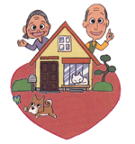
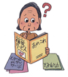
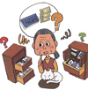

日常生活自立支援事業
日常生活自立支援事業とはどんな事業？

福祉サービスを利用したいけど、手続きの仕方がわからない。銀行に行ってお金をおろしたいけれど、自信がなくて誰かに相談したい。
毎日の暮らしのなかにはいろいろな不安や疑問、判断に迷ってしまうことがたくさんあります。社会福祉協議会では、このような場合に、あなたが安心して暮らせるようサポートします。
（所管は長野県社会福祉協議会）
どんなことをしてくれるの？
福祉サービス利用申し込み、契約手続き、日常的なお金の出し入れ、預金通帳の預かりなどのお手伝いをします。
主なお手伝いの内容 |
福祉
サービス
|
福祉サービスが安心してご利用できるようお手伝いします。
保健・医療福祉サービスについての制度・内容に関する情報提供や専門家の紹介・助言、サービス申し込み代行・同行・契約締結・福祉サービス実施状況の確認、見守りなどを行います。 |
|
金銭管理
サービス |
毎日の暮らしに欠かせないお金の出し入れのお手伝いをします。
利用者本人に代わって、一定額の預貯金の出し入れ、公共料金・家賃の支払い、福祉サービス利用料・医療費等の支払い、年金等の受領確認を行います。 |
|
書類預かり
サービス |
大切な通帳やハンコ、証書などを安全な場所でお預かりします。
本人の意思に基づいて契約を行い、預金通帳、権利証書、実印、銀行印等の書類等を安全に保管します。 |
|
どんなひとが利用できるの？

認知症の高齢者、知的障害者、精神障害者などで判断能力が十分でないため日常生活での福祉サービスの利用やお金の管理などがうまくできない方々が利用できます。
なお、療育手帳や、精神障害者保健福祉手帳を持っていたり、認知症の診断を受けている方に限られるものではありません。
お金はかかるの？
ご相談や支援計画の作成にかかる費用は全て無料です。
実際にご自宅に訪問し、お手伝いするときには利用料と交通費がかかります。
サービス利用料 |
|
1時間当たり |
1,000円 |
交通費 |
|
1km当たり |
20円 |
生活保護を受けている世帯は無料となります。
こんなことがあったら相談を！
| 福祉サービスを使いたいが、どうすればいいか分からない。 |
介護保険関係の書類がくるけど、どう手続きしたらいいか分からない。 |
お金の出し入れや、日頃のお金の管理に不安がある。 |
最近物忘れが多くて、預金通帳をどこにしまったか、忘れてしまう。 |
知らないうちに、自分のお金が勝手に使われていて困っている。 |
 |
|
|
|
 |
どこに相談に行けばいいの？ どうやったら利用できるの？
利用に関するご相談等がございましたら、まずはお気軽に茅野市社会福祉協議会へご連絡ください。
当会の「専門員」が希望者のかたの様子を伺って、ご本人と面談等をいたします。本事業に該当すると認められますと、ご本人の希望支援内容を計画し、納得頂ければ契約を結びます。
そして、福祉に詳しく熱意のある「生活支援員」が、利用者の生活を援助します。
なお、日常生活自立支援事業をご利用いただくためには、次の２つのことが大事になります。
① ご本人から、この事業を利用するという利用意思が確認できること。
② 契約行為がある程度理解できること。契約により自分がどんなサービスを受けるのかある程度理解できること（本人以外の方（成年後見人等は除く）との契約は結ぶことができません）。


 茅野市社会福祉協議会
茅野市社会福祉協議会